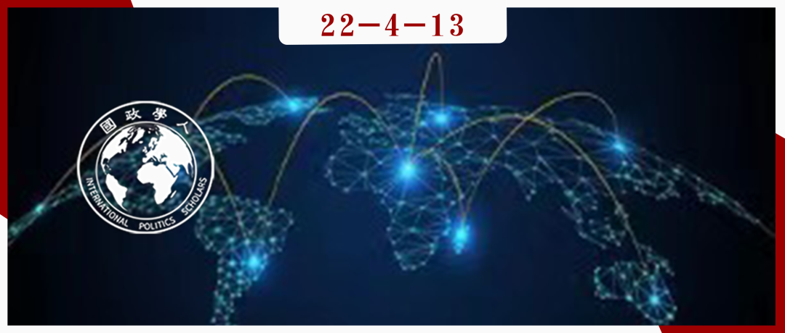

收录于合集

T.V. 保罗： 全 球化、逆全球化到再全球化？
作者： T.V. 保罗，国际研究协会（ISA）第56任（2016—2017）主席，麦吉尔大学国际关系专业教授，主要研究领域为国际安全、区域安全和南亚研究。
编译： 胡瑞琨（国政学人编译员，布里斯托大学政治学博士研究生）
来源： T V Paul, Globalization, deglobalization and reglobalization: adapting liberal international order, International Affairs , Volume 97, Issue 5, September 2021, Pages 1599–1620, https://doi.org/10.1093/ia/iiab072

导读
作者认为，在过去两个世纪里，自由主义在应对挑战和适应新环境方面一直是最成功的政治意识形态。自由主义国际秩序（后简称为“自由秩序”）在二战后建立并在冷战结束后得到巩固，然而当前却面临一系列危机。 自由秩序的三大支柱分别是民主、经济相互依赖和国际制度。 在逆全球化（或称“去全球化”）压力的推动下，非自由主义和民粹主义的兴起对这些基本支柱提出了挑战。自由秩序衰落的两个关键原因是 收入分配和制度问题。 本文认为，只要自由国家采取补救措施适应新环境，如同它们在1919年、1930年代、1940年代后半期、1960年代和1991年所进行的改革那样，自由秩序的消亡并非不可避免。改革后的全球化（或称“再全球化”），对于应对来自自由世界以外的地缘政治挑战至关重要。其他制度无法提供自由秩序所能提供的吸引力及其所带来的繁荣和自由。本文强调了自由国家需要通过内部改革以解决日益加深的不平等和财富分配这些全球化深化带来的副作用，同时还强调了这一改革与自由秩序成功前景之间的联系。另外，本文还提出了考虑新现实以应对内部挑战的完善福利国家的必要性。本文为我们提供了一个自由秩序的内部视角，体现了作者对于现有主导性国际秩序的反思，同时为当前的国际秩序的变动中自由秩序面临的问题提出了解决方案。这将有利于我们理解未来以美国为主的自由世界主导国家的内外政策，以及思考中国在未来可能由美国潜在主导的再全球化进程中如何与西方自由秩序相处而实现双赢与和平的局面。
编译
01
引言
自由秩序在政治和意识形态上的优势促进了冷战结束以来全球化的深入。这一进程得到了全球霸主美国的推动和支持，展现了自由经济秩序与国际体系中权力分配之间的联系。（有关自由秩序的讨论，可参见：什么是自由主义国际秩序）然而，全球化产生了许多外部效应和意想不到的后果。尽管全球化依旧顽强地存在，但强大的逆全球化力量也在不断涌现。（关于逆全球化问题的讨论，可参见：徐坚 逆全球化风潮与全球化的转型发展；全球化，去全球化对大国关系的复杂影响；全球化如何伤害美国；缚于全球化之上）
削弱自由国际秩序的 最关键因素是自由国家的国内制度和经济能力的衰退。 由于经济全球化对主要自由国家的国内经济和社会部门的影响不均衡，自由秩序在全球层面面临着重大的生存挑战。自由国家的国内秩序也受到移民的压力，产生了各种色彩的 右翼民族主义。 在国内，巨大的 收入不均 在某些阶层的选民中引发了不满，对民粹主义政党领导人的选举产生了一定的政治影响。包括美国、英国和印度等在内的成熟民主国家都在玩弄身份政治，随着特朗普在2020年选举中的失败，这种性质的企图在美国受到了挫折。但 特朗普主义 仍在蓬勃发展，并可能以更严重的形式卷土重来。（关于全球化与民粹主义问题的讨论，可参见：俞可平 全球化时代的民粹主义；田野、赵莉 全球化如何塑造美国右翼民粹主义的选民基础；吴宇 吴志成 全球化的深化与民粹主义的复兴；叶江 全球化退潮及民粹民族主义兴起；全球化退潮及民粹主义兴起对现代世界体系的影响；全球化、制度与民族不平等）经济收缩和边境管制方面的逆全球化是最明显的结果，因此自由秩序在短期内出现了衰退。如果自由秩序的捍卫者不阻止这种趋势，那么 新冠疫情 后的世界秩序可能会因疫情加剧而进一步遭受挫折。尽管修补的力量也在努力防止自由秩序彻底崩溃， 疫情危机无疑加速了逆全球化的进程 。（关于新冠疫情与全球秩序的讨论，可参见：大揭秘：新冠疫情与全球化大变革）
自由主义已经适应并为越来越多的国家提供了更多机会，但这并不意味着所有的人口阶层都从自由主义的优势中受益。自由秩序的兴起并不容易，其兴起过程经常伴随着暴力，特别是给在非欧洲和非白人社会的一些群体带来了相当大的痛苦。过去，自由主义与欧洲帝国联系在一起， 帝国扩张的捍卫者利用自由主义掩护他们的种族主义思想。 这一挑战仍在分裂西方国家和非西方国家。 非西方国家遭受了殖民主义的苦难，希望保持其民族主义和国家自治，而经历了数百年战争的西方国家则希望通过威尔逊思想和国际制度来驯服民族主义。 然而，尽管存在诸多缺陷，由于在大多数其他的制度和政治经济秩序中，人类对自由和繁荣的渴望无法轻易实现，自由主义及其理想仍然存在了两百多年。自由主义的“长寿”一部分归因于它的适应能力。它融合了费边主义和自由社会主义等模式中的许多进步思想，这些想法有助于创建现代福利国家，这反过来又促进了自由秩序的存续。为了让自由国际秩序在21世纪生存下去，自由国家可能不得不采用一种能够应对国内经济和社会挑战的精致福利国家形式，尤其是在分配领域。如果他们不这样做，内部失败将削弱国际上对自由国家领导地位的要求。
02
自由主义的基本思想
自由秩序源于两条自由主义的核心思想。正如伊肯伯里所定义的那样，自由国际主义是 “启蒙运动和西方民主经验中出现的关于如何在世界上思考和行动的一系列思想。其核心是关于自由民主国家——以及更广泛的世界——应该如何合作来组织它们的共同关系的信念。” 伊肯伯里认为，自由国际秩序的核心思想是： （1）国际贸易交流的开放；（2）多边主义和基于规则的关系；（3）民主团结与合作安全；（4）国内和国际社会的进步社会目标。 简而言之，用沃尔特·米德的话来说，自由秩序基于 “以法律为基础的普遍秩序的梦想，以确保国家之间的和平和国家内部的民主”。
更具体地说，自由秩序的核心是康德愿景中所体现的三个主要元素： 国际制度、宪政民主和经济相互依赖。 制度通过制定适当的规则和条例，在约束国家的任意行为方面发挥着关键作用。民主规范对权力的使用并限制权力在内外的滥用，这对于民主国家之间的行为至关重要。经济相互依赖有望在国家之间产生和平，因为打破这种依赖关系的成本收益考量总是有利于和平。另外，自由秩序这一“以规则为基础的国际秩序”将改善国家之间的协商理解，以及通过不断增加的制度网络促进合作和一体化。在当代，自由秩序得到了美国军事和经济力量的支持，即使在许多情况下美国自己已经背离了自由主义原则。这种背离提出了对现实主义机制的需求，以促进自由秩序的兴起和维持以及两个秩序之间的密切关系。
上述所有命题都假设自由国家更有可能产生审慎、民主导向的领导人。如果自由国家由鲁莽的领导人领导，它们最终将面临选举失败，而国际体系将在外部以外交政策失败的结果来惩罚它们。因此，自由国家可以从错误中吸取教训，并根据系统的要求进行调整。领导不力的自由主义国家也会破坏其声誉，这将影响它们与志同道合的国家建立持久联盟的能力。挑战在于，即使是成熟的民主国家，也会产生鲁莽的领导人和左右两派的反自由主义病态情况。相比之下，过去的自由派领导人表现出更好的学习和适应能力，尽管他们并不总是为了全人类的利益。
03
全球化的挑战
深度经济全球化的开始主要缘于自由贸易以及自由资本主义思想在全球范围内的扩张。但全球化也使那些在高度竞争的经济秩序中缺乏所需教育或技能的人，产生了越来越高的期望和未实现的抱负。激进的左翼和保守的极右翼都为了普遍经济福利对自由主义主张提出了挑战。对前者来说，自由主义加剧了不平等。对于后者而言，自由主义者破坏了个人权利和国家主权，并使得独立的外交政策选择不再可能。
在发达国家和发展中国家，受2020年疫情封锁影响最严重的是穷人和中下阶层，其中一些人在过去的二十年里在摆脱贫困方面进展甚微，因为他们受限于几乎没有收益的自给农业或低收入的服务行业，并且疫情使其雪上加霜。 发达工业国家的自由主义者还没有提出有意义的解决方案来解决全球化造成的财富分配不均问题。 相反，新自由主义议程继续占据主导地位。在缺乏有意义的福利倡议并形成政治共识的情况下，过去的自由放任思想依旧盛行。
托马斯·皮凯蒂认为，现代经济增长会在顶层产生资本积累，而其他人的收入不会成倍增长；高度不平等的收入分配会产生一系列政治结果，尤其是会刺激社会不满情绪，从而损害民主价值观。 今天的民粹主义是分配不平等和某些选民群体不满的直接结果。 例如，在美国中西部和南部，许多人对自由主义精英带来巨大经济希望的能力失去了信心。除此之外，在未受过大学教育的白人下层阶级中，种族主义叙事颇有市场，而特朗普及共和党通过巧妙地使用社交媒体利用了这些不满情绪。
04
作为前奏的过去
自由秩序在过去两百年里最终战胜了帝国主义和法西斯主义等意识形态，然而，这个过程伴随着鲜血与暴力。此外，自由主义者经常偏离其核心原则，如人的平等和主权平等。早期的自由主义者也是种族主义和殖民帝国的推动者。自由主义与西方帝国主义及殖民主义的纠缠导致了根深蒂固的系统性种族主义和过度的军事干预，这两者一度享有正当性。英国和美国分别在拿破仑战争和第二次世界大战后崛起为强国，它们都利用自由主义国际主义思想加强霸权和帝国统治，尽管美国在形式上更像是一个非正式的帝国。
威尔逊在他的“十四点”中提出的一战后的制度创新，最终未能阻止第二次世界大战的爆发，但它奠定了后来以联合国为中心的全球制度主义秩序的基础，也促进了民族自决的理念。威尔逊提倡国际仲裁、海洋自由和非歧视性贸易体系，编纂了国际法，体现了这一开放和基于规则的秩序中的规范和原则，并且希望国际联盟作为该秩序的象征和政治顶峰。然而，他关于国家和人民自决的概念在实践中的作用非常有限。这与威尔逊的国内种族隔离主义观点以及他否认美国黑人的政治和法律权利的种族主义政策是一致的。在经济大萧条时期，罗斯福进行了多项国内改革，推出多项新政。这些政策基于福利国家原则的创新措施使自由主义者能够分配财富，并使很大一部分美国人口免于陷入贫困的深渊。同时，罗斯福在国际层面的最大贡献是他对非欧洲民族自决的支持。用伊肯伯里的话来说：“法西斯主义和极权主义的兴起导致罗斯福和他的同时代人放弃了他们的文明、种族和民族观念，重新思考自由主义和现代性的本质。” 随着新国家从欧洲殖民帝国的废墟中崛起，这种对非殖民化的支持在许多方面帮助改变了世界。这种适应是重要的，在大多数情况下是国际秩序相对和平变化的一个很好的案例。1933年3月，罗斯福还推出了对拉美的“睦邻政策（Good Neighbor Policy）”，摒弃了美国以往干涉该地区国家内政的政策。
第二次世界大战后，美国成为世界上最强大的国家，控制着全球约50%的经济生产。布雷顿森林体系产生了两个关键机构：世界银行和国际货币基金组织。它们都在应对越来越多的国家的发展需求。杜鲁门政府提出的马歇尔计划帮助饱受战争蹂躏的欧洲国家摆脱了他们所处的经济危机并促进其战后重建。随着恢复，经济开始扩张和增长，美国成为世界上最强大的经济体。然而，许多自由主义创新并不足以避免因人口扩张和政治反弹而带来的经济和政治危机，尤其是针对美国黑人族群、以及贫富差距导致的阶级冲突。美国卷入与苏联的冷战竞争，形成许多军工复合体并在南方第三世界进行了许多不必要的代理战争和军事干预。其中一些是由自由派总统发起的，其带来的成本不可估量。 自由秩序是扭曲的，并且缺乏平等代表性。 对批评者来说，该秩序未能真正接受种族多样性并缓和基于阶级的不平等， 而其基本原则仍然是以欧洲为中心、精英主义和抵制改革的。 美国领导的秩序也没有其支持者所声称的那样温和。 它将大量国家排除在外，并纳入了许多强制性因素。
每一次严重的国内和国际危机都为自由主义者提供了适应不断变化的政治和经济环境的机会。 他们在某些情况下比在其他情况下更好地实现了这一点；但总体而言，克服生存挑战，以及通过创新的理念和政策适应国内形势的变化，使自由秩序免于陷入灾难。然而，更重要的是， 自由派的胜利伴随着许多流血和苦难。这是自由主义内部固有矛盾的结果。建立帝国的冲动导致自由主义者对较弱的国家、种族和社会的苦难视而不见。 自由国家发动的许多代理人战争，无论是在越南还是在伊拉克，都被证明是不必要的，并且是由错误的期望和错误的战略假设所驱动的。
冷战的胜利迎来了美国二十年的霸权和单极时刻。基于将经济相互依赖和民主理念传播到世界其他地区的自由主义冲动，美国在最新一轮的全球化深化中处于领先地位。自由放任的回归有助于在世界范围内传播经济繁荣，特别是对那些实现经济自由化的国家而言。这帮助一些非自由主义世界的国家，尤其是中国，发展出主要的制造中心以及全球和区域供应链。经济和政治上的自由主义思想通过强国和国际组织的胁迫和煽动、市场竞争和投资准入、学习其他自由化国家的经验以及模仿成功模式等方式传播到世界各地。然而， 新自由主义处方并没有及时满足社会某些群体日益增长的期望。 与此同时，最近，推特和脸书等社交媒体一直在帮助许多团体以前所未有的速度传播他们的想法和需求。关于自由主义思想的争论是通过 熟练使用社交媒体 来促进的，而自由主义的反击往往效果不佳。
05
地缘政治的挑战
今天，在自由世界成员眼中，对自由秩序构成最重大的外部地缘政治挑战的是中国，其带来的挑战是多方面的，并且其供应链在全球化经济中占据一席之地。俄罗斯的不对称挑战也很重要，尤其是其被指控干预了自由主义国家的民主选举。然而， 部分原因可能是由于自由国家忽视了俄罗斯在地位方面的一些被压抑的期望，以及对其在很大程度上是单方面结束冷战的承认。
欧盟在试图适应新形势方面面临的困难也对自由秩序不利，因为欧盟代表着二战以来实践中最成功的自由秩序。欧盟在相当程度上创造并实践了和平、民主和经济相互依赖的三大支柱，并在华约和苏联解体后吸引了许多新成员。此外，欧盟成员国建立的社会民主和福利国家在解决极端收入不平等和贫困问题方面非常成功。然而，部分由于全球化导致的不平等以及来自非洲、中东和南亚的非法移民的涌入，欧洲国内右翼势力重新出现，挑战了既有的自由秩序。欧盟目前面临的挑战之一来自一些新成员，特别是匈牙利和波兰等不愿遵守欧盟的民主和问责标准。
06
解决方案：通过内部改革实现再全球化
如果自由主义要继续存续，自由主义国家的内部改革是首要前提。 自由主义的改革有成功的先例，解决了国内群体之间对于不平等的不满，但有意义的内部改革与国际适应和全球治理改革并非没有关系。 这些改革应该促进公民民族主义（civic nationalism）并扩大自由社会的吸引力。 再全球化是必要的，但要进行重大调整，包括保障自由和财富分配，即使自由经济秩序的竞争性方面得以保留。 自由秩序的持久需要在新的国家和行动体中成功灌输自由主义理想，而这反过来又意味着再全球化需要这些国家和行动者进行有意义的改革。 市场经济和人类发展的同步扩大应该是自由秩序得以延续的战略。
这部分是因为，第一， 西方在人口上处于劣势。 劳动年龄人口的减少意味着更少的手来生产更多的财富和税收来支付老龄化人口及其福利。第二，鉴于其国内分裂和疫情造成的破坏， 美国的相对衰落及与世界隔绝 是可能的。因此，需要一个更广泛的自由联盟来抵御非自由势力及其思想。第三， 中国不是冷战时期的苏联， 它被证明是世界工厂，在生产力、技术进步和贸易能力方面的成就远高于苏联。第四， 世界的技术和经济中心不再是欧洲，而是亚太地区， 欧洲在亚太地区是次要参与者。第五， 欧洲自己可能会遵循对冲策略， 从而使美国和中国相互对抗。第六， 印度加入 可能有助于自由主义秩序，但莫迪及其领导印度人民党正在颠覆许多关于自由、民主和世俗主义的自由主义思想。印度与中国的冲突可能会产生新德里与华盛顿的地缘政治联盟，以在亚太地区平衡中国，尽管印度不太可能一直按照美国的规则行事。
在经济相互依赖层面，美国和其他自由主义国家需要防止中国统治替代市场。印度、非洲、拉丁美洲和东南亚提供了这样的机会。基于规则的贸易和投资将需要更多有利于市场的想法。但 自由贸易协定和优惠贸易协定应与这些国家的社会发展以及支持收入分配和民主治理实践的经济政策挂钩。
在民主层面，自由国家在促进民主和基本自由方面没有什么可羞耻的；但这 必须通过和平手段和鼓励非自由国家的非暴力运动来完成，并承认并非所有运动都能立即产生积极成果。说服和教育比胁迫和军事干预更可取，因为后者会产生巨大的痛苦和社会混乱。 如果人道主义干预是必要的，它们应该是集体的和合法的，并且要在联合国的支持下进行。促进民主还需要自由主义者自己成为民主的拥护者，并击败不相信民主理想的非自由民粹主义者。在许多民主国家，国内的自由主义机构受到非自由主义政治代理人的积极操纵而受到损害。他们的失败将需要公众教育民主的价值以及替代制度将如何削弱他们的自由。全球推广民主应保留自由主义的核心目标；但是，如果自由主义者在国内不实践他们在国外宣传的内容，他们的话就会变得空洞。在美国，特朗普的支持者参与了各种形式的活动，以限制黑人和少数族裔获得民主权利。内部民主复兴将需要自由力量通过社会动员有效地打击这些趋势。
在国际制度层面，那些曾经为自由秩序做出巨大贡献的 国际机构需要自由国家支持其改革。 其中许多机构，如联合国安理会、国际货币基金组织和世界银行，已经奄奄一息，无法反映21世纪的政治现实。这些制度可以扩大范围， 自由国家应该鼓励新进入者遵循自由理想和制度原则。 以保护的责任（R2P）为名的自由干预是后冷战时代的一项重要创新。然而，这一创新被批评为背离了威斯特伐利亚的不干涉主义规范，并且只针对非常弱小的发展中国家，而强大的国家则被排除在外。问题是如何鼓励联合国，特别是安理会，以及维和机构，制定人道主义干预协议和战略，真正促进而不是破坏自由主义思想。
最后， 自由主义者需要提高国家能力并更有效地应对分配挑战。 为了实现这一点， 自由主义者需要以一种新的方式重塑福利国家， 并避免给予新自由主义在教育、医疗保健和基础设施建设等关键领域的全面放任。美国和西欧国家未能及时和人道地应对疫情危机，这是对其作为关怀系统的信誉的最新打击。没有福利国家，自由国家不会长久繁荣，尤其是在面对我们今天所面临的生存危机时。 没有社会正义，自由主义就会消亡，因为阶级和种族将站起来反对它，自由主义秩序所提供的和平变革将会消失。 今天，性别和种族平等正在成为全球话语的一部分，而自由主义者尚未为他们的融入提供有意义的想法。自由主义者有很好的机会在解决种族不平等问题上发挥领导作用，并在警务、刑事司法和监狱系统方面进行有意义的改革。虽然可能需要完善的社会民主思想来驯服阶级划分，但克服种族和性别划分可能需要额外的社会工程。欧洲模式需要重振活力。种族和种族划分要求对人口进行多元文化社会美德的教育和社会化。与此同时，欧洲需要做更多的工作来防止难民流动。解决方案可能在于难民的母国，需要努力阻止政治迫害和经济剥夺。如果欧盟成功地将东欧和巴尔干国家更好地融入其民主联盟，那么在未来一段时间内，欧洲内部冲突的一个主要原因就可以避免。
07
结论
本文首先讨论了作为自由主义扩张的一个分支的全球化的开始，然后提出了全球化引起的变化对自由秩序，特别是在国内舞台上的挑战。去全球化的压力无处不在，最明显的是民粹主义和中国等力量崛起为自由秩序的制衡结果。面对民粹主义内部的挑战，以及非自由主义国家的外部挑战，自由主义国家能否维持和改善他们在战后时代建立的秩序？自由主义国家能否产生体现新思想的新领导路线，以应对全球化和日益加剧的不平等带来的当代挑战？ 如果自由主义要重新占据主导地位并作为自由与和平的进步力量继续存在于世界政治中，那么这里提出的再全球化的认真努力是必不可少的，其基础支柱是三项原则和新的福利国家。 然而，再全球化不可能像过去那样，是一种完全以西方为中心的秩序，或者说主要有利于西方国家的秩序。相反，它必须是一个真正具有包容性的全球秩序。
词汇整理
逆全球化/去全球化 deglobalization
再全球化 reglobalization
经济相互依赖 economic interdependence
身份政治 identity politics
福利国家 welfare state
审校 | 胡可怡 张潇文
排版 | 屈媛媛 赵梓煦
文章观点不代表本平台观点，本平台评译分享的文章均出于专业学习之用, 不以任何盈利为目的，内容主要呈现对原文的介绍，原文内容请通过各高校购买的数据库自行下载。

国政学人
支持学术公益与知识传播
微信扫一扫赞赏作者 __赞赏
已喜欢，对作者说句悄悄话
取消 __
发送给作者
发送
最多40字，当前共字
上一页 1/3 下一页
长按二维码向我转账
支持学术公益与知识传播
受苹果公司新规定影响，微信 iOS 版的赞赏功能被关闭，可通过二维码转账支持公众号。